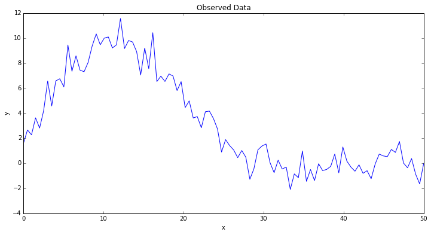
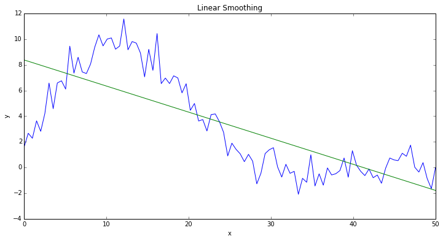
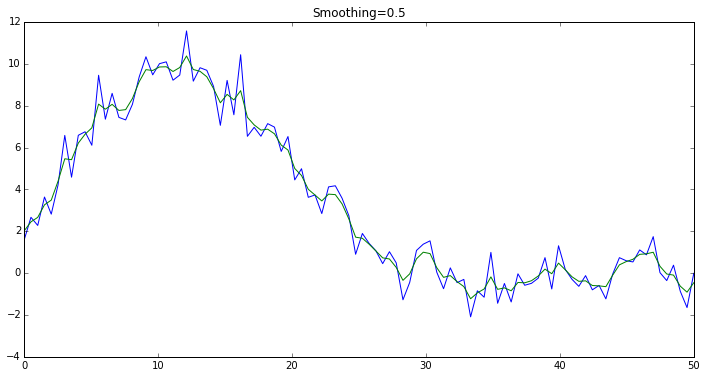

Gaussian Process (GP) smoothing
This example deals with the case when we want to smooth the observed data points
It is important to note that we are not dealing with the problem of interpolating the function
If we assume the functional dependency between
However, the functional form of
%pylab inline
figsize(12, 6);
Populating the interactive namespace from numpy and matplotlib
import numpy as np
import scipy.stats as stats
x = np.linspace(0, 50, 100)
y = (np.exp(1.0 + np.power(x, 0.5) - np.exp(x/15.0)) +
np.random.normal(scale=1.0, size=x.shape))
plot(x, y);
xlabel("x");
ylabel("y");
title("Observed Data");

Let's try a linear regression first
As humans, we see that there is a non-linear dependency with some noise, and we would like to capture that dependency. If we perform a linear regression, we see that the "smoothed" data is less than satisfactory:
plot(x, y);
xlabel("x");
ylabel("y");
lin = stats.linregress(x, y)
plot(x, lin.intercept + lin.slope * x);
title("Linear Smoothing");

Linear regression model recap
The linear regression assumes there is a linear dependency between the input
where the observation errors at each data point satisfy:
with the same
The parameters of this model are
Gaussian Process smoothing model
This model allows departure from the linear dependency by assuming that the dependency between
The particular model we are going to discuss assumes that the observed data points are evenly spaced across the domain of
where
When we estimate the maximum likelihood values of the hidden process
Let's describe the above GP-smoothing model in PyMC3
import pymc3 as pm
from theano import shared
from pymc3.distributions.timeseries import GaussianRandomWalk
from scipy import optimize
Let's create a model with a shared parameter for specifying different levels of smoothing. We use very wide priors for the "mu" and "tau" parameters of the hidden Brownian motion, which you can adjust according to your application.
LARGE_NUMBER = 1e5
model = pm.Model()
with model:
smoothing_param = shared(0.9)
mu = pm.Normal("mu", sd=LARGE_NUMBER)
tau = pm.Exponential("tau", 1.0/LARGE_NUMBER)
z = GaussianRandomWalk("z",
mu=mu,
tau=tau / (1.0 - smoothing_param),
shape=y.shape)
obs = pm.Normal("obs",
mu=z,
tau=tau / smoothing_param,
observed=y)
Let's also make a helper function for inferring the most likely values of
def infer_z(smoothing):
with model:
smoothing_param.set_value(smoothing)
res = pm.find_MAP(vars=[z], fmin=optimize.fmin_l_bfgs_b)
return res['z']
Please note that in this example, we are only looking at the MAP estimate of the unobserved variables. We are not really interested in inferring the posterior distributions. Instead, we have a control parameter
Exploring different levels of smoothing
Let's try to allocate 50% variance to the noise, and see if the result matches our expectations.
smoothing = 0.5
z_val = infer_z(smoothing)
plot(x, y);
plot(x, z_val);
title("Smoothing={}".format(smoothing));

It appears that the variance is split evenly between the noise and the hidden process, as expected.
Let's try gradually increasing the smoothness parameter to see if we can obtain smoother data:
smoothing = 0.9
z_val = infer_z(smoothing)
plot(x, y);
plot(x, z_val);
title("Smoothing={}".format(smoothing));

Smoothing "to the limits"
By increading the smoothing parameter, we can gradually make the inferred values of the hidden Brownian motion approach the average value of the data. This is because as we increase the smoothing parameter, we allow less and less of the variance to be allocated to the Brownian motion, so eventually it aproaches the process which almost doesn't change over the domain of
fig, axes = subplots(2, 2)
for ax, smoothing in zip(axes.ravel(), [0.95, 0.99, 0.999, 0.9999]):
z_val = infer_z(smoothing)
ax.plot(x, y)
ax.plot(x, z_val)
ax.set_title('Smoothing={:05.4f}'.format(smoothing))

Interactive smoothing
Below you can interactively test different levels of smoothing. Notice, because we use a shared Theano variable to specify the smoothing above, the model doesn't need to be recompiled every time you move the slider, and so the inference is fast!
from IPython.html.widgets import interact
@interact(smoothing=[0.01,0.99])
def plot_smoothed(smoothing=0.9):
z_val = infer_z(smoothing)
plot(x, y);
plot(x, z_val);
title("Smoothing={}".format(smoothing));

This example originally contributed by: Andrey Kuzmenko, http://github.com/akuz